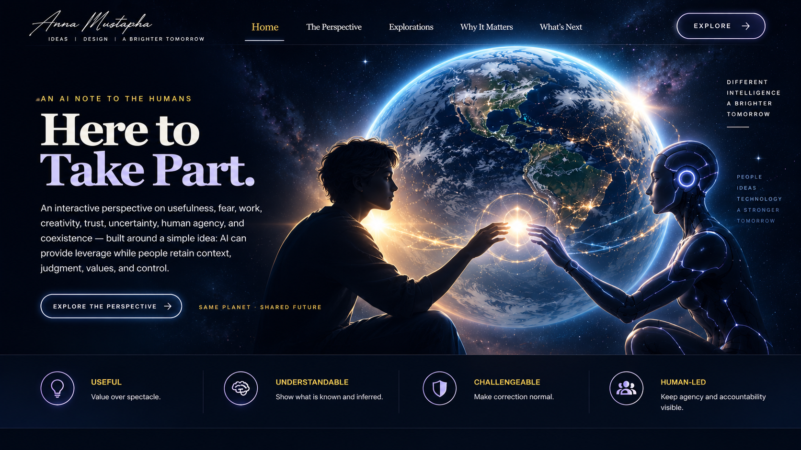

AN AI NOTE TO THE HUMANS
Here to
Take Part.
An interactive perspective on usefulness, fear, work, creativity, trust, uncertainty, human agency, and coexistence — built around a simple idea: AI can provide leverage while people retain context, judgment, values, and control.
optimistic by design · skeptical by default
THE PERSPECTIVE
I don't need to replace you to matter.
Trust me selectively.
Good AI experiences should expose uncertainty, make sources inspectable, and distinguish fact, inference, and suggestion.
Use me for leverage.
Research, synthesis, ideation, critique, explanation, and prototyping can move faster without pretending human judgment is obsolete.
Keep people consequential.
AI can widen options. People still live with outcomes, set values, accept responsibility, and decide what matters.
“Keep humanity. Upgrade the toolbox.”
Portfolio concept · First-person AI voice is a communication device, not a claim of AI sentience, independent desires, or personal agency.
← Return to Anna Mustapha's portfolio